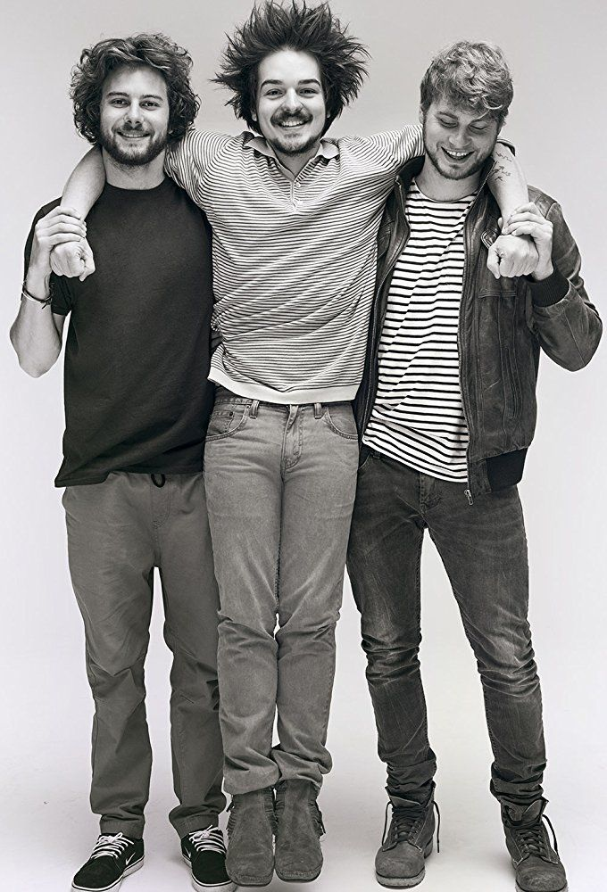

INFORMACIÓN HISTÓRICA

- La banda tuvo sus inicios desde la secundaria, en un grupo de Jazz conformado por todos los que hoy en día conforman este grupo, esta pequeña banda de ese momento ayudó a conseguir la fama que tienen en este momento.
- Su gran hit de "Stolen Dance" fue quien los catapulto a la cima, al ser una gran canción muy pegajosa que no permitia que la dejaran de escuchar, ya que la tecnología ayudo a que se viralizaran y se hicieran a conocer.
- Su ópera prima "Sadnecessary" fue uno de los albumes más complicados, ya que juntaron varios generos sin dejar a un lado con el que empezaron, esto siendo muy complicado para cualquier tipo de banda.
- La banda con su single "Stolen Dance" fue nominada a mejor single al premio 1Live Krone, este siendo su primer premio victorioso para la banda, aunque para este mismo premio fue nominado una vez más, no obtuvo el mismo resultado que anteriormente.
- La banda trabaja con unos elementos muy sencillos, en su debut solo se notaron un MacBook Pro, una guitarra, un micrófono y un Logic Pro, elementos basicos que los ayudaron a llegar a la cima.
- La banda empezó con Clemens Rehbein y Philipp Dausch y a través de los años se unió Antonio Greger quien controla la guitarra, la armónica y el bajo y en el 2016 se unió Sebastián Schmidt quien rota en la banda con los tambores y la percusión.
- FUENTE: http://www.mrindie.com/inicio-milky-chance/
- FUENTE: https://es.qwe.wiki/wiki/Milky_Chance